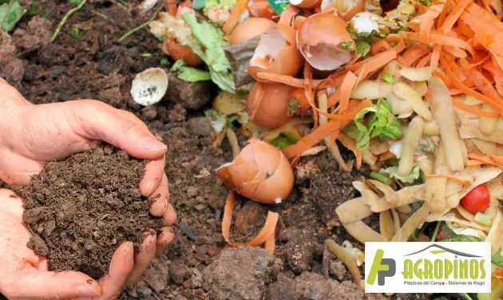
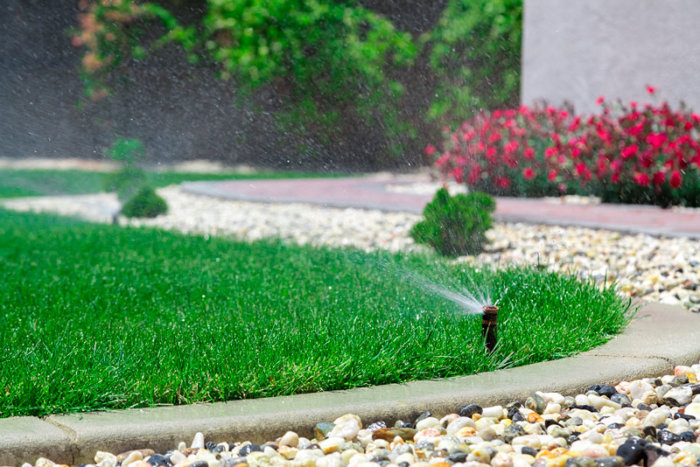

Tierra y fertilizantes


Sin importar el tipo de producto que se decida plantar, todos los cultivos necesitan de una serie de cuidados que ayuden en su debido crecimiento y permitan obtener de ellos los productos más óptimos con la finalidad de asegurarle al cliente final un nivel de calidad en cada uno de los procesos que se realizan al interior de las plantaciones. La mayoría de las plantas que producen frutos u hortalizas, por ejemplo, necesitan evitar cualquier tipo de plaga u condición desfavorable que altere sus características físicas debido a que son productos de consumo humano que necesitan contar con ciertas condiciones de salubridad. Hoy en Agropinos le contamos por qué los fertilizantes orgánicos son apropiados para los cultivos y cuáles son todos los beneficios que tienen estos productos para el agro.
Sin importar el tipo de producto que se decida plantar, todos los cultivos necesitan de una serie de cuidados que ayuden en su debido crecimiento y permitan obtener de ellos los productos más óptimos con la finalidad de asegurarle al cliente final un nivel de calidad en cada uno de los procesos que se realizan al interior de las plantaciones. La mayoría de las plantas que producen frutos u hortalizas, por ejemplo, necesitan evitar cualquier tipo de plaga u condición desfavorable que altere sus características físicas debido a que son productos de consumo humano que necesitan contar con ciertas condiciones de salubridad. Hoy en Agropinos le contamos por qué los fertilizantes orgánicos son apropiados para los cultivos y cuáles son todos los beneficios que tienen estos productos para el agro.
Tipos de fertilizantes orgánicos
Los fertilizantes orgánicos son productos de origen natural como lo podría ser el carbono o algunos derivados vegetales y animales que se pueden enlazar a otra serie de elementos químicos para mejorar su eficacia. La principal función de este tipo de implementos es aportarle a distintos tipos de plantas los nutrientes que requieren para crecer en las mejores condiciones posibles. A diferencia de fertilizantes minerales cuya concentración química es alta, los fertilizantes orgánicos son mucho más amigables con el medio ambiente y cuentan con mayor eficacia debido a que le aportan los nutrientes a la planta, pero también le integra materia orgánica a los suelos para facilitar su regeneración y aumentar su fertilidad para futuras plantaciones.
En procesos de plantación más convencionales, además implementar fertilizantes para el desarrollo de las plantas, luego de la etapa de cultivo se necesitan emplear sustratos adicionales que regeneren los suelos antes de iniciar una nueva etapa productiva. Cuando se fertilizan las plantas con productos orgánicos, los suelos no se ven afectados debido a que también absorben minerales que regulan sus componentes internos, por lo que no será necesario emplear otros productos que garanticen esto.
Los abonos orgánicos se pueden diferenciar entre sólidos y líquidos, pero estos a su vez cuentan con distintos tipos que se clasifican de acuerdo a su origen y sus propiedades específicas. De este modo, los principales tipos de fertilizante orgánicos son:
- Compost: El compostaje es un proceso de fertilización que se fundamenta en la descomposición controlada de distintos elementos sólidos de origen natural cuyo resultado es un producto tierroso que condensa toda clase de nutrientes que favorecen el crecimiento de las plantas. Dentro del proceso de descomposición, intervienen distintos tipos de microorganismos que, junto a las condiciones atmosféricas ideales, metabolizan un compuesto y lo convierten en materia natural cargado de distintas cantidades de sulfato, nitrógeno, carbono, fósforo, entre otros elementos.
- Humus: El humus es el resultado de un proceso de compostaje sólido en el que intervienen activamente lombrices detritívoras que degradan elementos orgánicos, en su mayoría de origen vegetal, para producir un compuesto rico en minerales. Este lombicompuesto se diferencia de otro tipo de fertilizantes orgánicos debido a que su calidad es mucho mayor, pero para garantizar las condiciones más favorables para las lombrices que se encargan de producir esta materia, es necesario implementar un lombricultivo cubierto por geomembranas que faciliten el drenaje del lixiviado y brinden la suficiente protección que necesitan estos organismos para su supervivencia.
- Purín: Se le conoce como purín a un grupo de compuestos líquidos altamente fertilizantes que son el resultado de procesos naturales como lo son el estiércol que proviene de animales y los desechos vegetales que se obtienen durante el uso de sistemas de riego. Gracias a sus cualidades físicas, el purín trae consigo una gran cantidad de metano que es posible extraer para retribuirle nutrientes al suelo y mejorar el crecimiento de las plantas.
Beneficios de los fertilizantes orgánicos
Como ya lo habrá podido notar, los fertilizantes orgánicos pueden resultar siendo una alternativa fácil, ecológica y eficiente que trae distintos beneficios para la plantación en los que se utilicen. Estos son algunos de ellos:
1. Aumentan la cantidad de nutrientes para el suelo
La liberación lenta, gradual y natural de nutrientes es una de las principales ventajas de los fertilizantes de origen orgánico. Esta liberación natural de elementos garantiza un mayor control en la cantidad de fertilizante que se utiliza evitando que se empleen niveles exagerados que podrían afectar gravemente la calidad del suelo. Esta regulación tambien asegurará que se tenga que utilizar fertilizantes con menos frecuencia, lo cual podría llegar a reducir considerablemente los gastos de su cultivo.
Como los productos crecen de manera natural son mucho más saludables, por lo que serán alimentos con mayores nutrientes a diferencia de quellos que crecen a un ritmo demasiado acelerado. No olvide que para optimizar el desarrollo de su cultivo deberá implementar otros productos para el agro. En el catálogo de Agropinos usted encontrará los insumos necesarios a que estos le permitirán obtener todos los beneficios de los fertilizantes orgánicos.
2. Son más amigables con el medio ambiente
3. Producen alimentos no tóxicos
4. Mejoran la fertilidad del suelo
Riegos

Tenemos los mejores sistemas de riegos para tu jardin
con la mejor y la mayor variedad de mercado